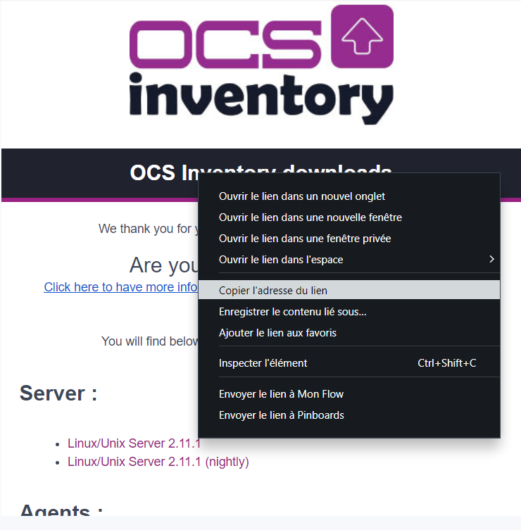
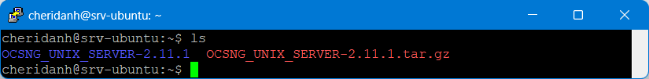
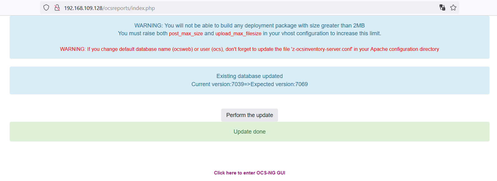

OCS Inventory NG sous Ubuntu Server
Dans ce tutos, nous allons apprendre comment installer un outil d'inventoring. Ce tuto se fait avec la version de Ubuntu 22.04 LTS.
Si vous n'avez pas Ubuntu installer, je vous invite à suivre mon tutos sur Installation de Ubuntu Server 22.04.
Pré-requis :
Pour mener à bien notre projet, nous aurons besoin de :
- Ubuntu Server
Et oui, rien que ça !
Configuration :
Pour commencer, faites la mise à jour des dépôts
sudo apt update && sudo apt upgrade -y
Installez les extensions PHP et certaines dépendances
sudo apt install -y git curl wget make cmake gcc make php-mbstring php-xml php-mysql php-zip php-pclzip php-gd php-soap php-curl php-json libapache2-mod-perl2 libapache-dbi-perl libapache-db-perl libapache2-mod-php libarchive-zip-perl
Installez de MariaDB
sudo apt install mariadb-server mariadb-client
Installez des modules Perl
sudo apt install -y perl libxml-simple-perl libcompress-zlib-perl libdbi-perl libdbd-mysql-perl libnet-ip-perl libsoap-lite-perl libio-compress-perl libapache-dbi-perl libapache2-mod-perl2 libapache2-mod-perl2-dev
Activez des modules Perl
sudo perl -MCPAN -e 'install Apache2::SOAP'
sudo perl -MCPAN -e 'install XML::Entities'
sudo perl -MCPAN -e 'install Net::IP'
sudo perl -MCPAN -e 'install Apache::DBI'
sudo perl -MCPAN -e 'install Mojolicious'
sudo perl -MCPAN -e 'install Switch'
sudo perl -MCPAN -e 'install Plack::Handler'
Connectez vous à MariaDB
sudo mysql -uroot -p
Une fois connecté, creez la base de données pour OCS
CREATE DATABASE ocs_db;
Créez un utilisateur et son mot de passe (pour notre cas l'utilisateur c'est ocs_user avec comme mot de passe ocs_pwd)
CREATE USER ocs_user@localhost IDENTIFIED BY 'ocs_pwd';
Attribuez les privilèges à notre utilisateur que nous venons de créer
GRANT ALL ON ocs_db.* TO ocs_user@localhost;
Actualisez
FLUSH PRIVILEGES;
Une fois que tout cela est fait, déconnectez vous
EXIT;
Téléchargez maintenant OCS Inventory Server
Pour ce faire, rendez-vous sur la page de téléchargement de OCS Inventory Server
Une fois sur la page, cliquer sur OCS Inventory Server Unix/Linux

Pour le formulaire qui s'affiche, il vous suffit de rentrer votre adresse mail. Le reste des champs peut rester vide. Ensuite cliquez sur Send
Ensuite rendez-vous dans votre messagerie, ouvrir le message de OCS puis faites un clique droit pour obtenir le lien du téléchargement.

Après avoir copié le lien faites
sudo wget coller_le_lien
Si vous ne pouvez pas faire de copier coller, utiliser ce lien pour télécharger la version 2.11.1
sudo wget https://github.com/OCSInventory-NG/OCSInventory-ocsreports/releases/download/2.11.1/OCSNG_UNIX_SERVER-2.11.1.tar.gz
Pour voir le dossier de OCS Inventory NG téléchargé, tapez : ls
Décompressez le fichier télécharger
sudo tar -xvf OCSNG_UNIX_SERVER-2.11.1.tar.gz
Pour voir le dossier décompréssé, tapez : ls

Rendez-vous dans le répertoire de OCS
cd OCSNG_UNIX_SERVER-2.11.1/
Pour voir le contenu du dossier extrait de OCS Inventory NG, tapez : ls
Dans le dossier, éditez le fichier setup.sh
sudo nano setup.sh
Dans ce fichier, modifiez unqiuement les lignes DB_SERVER_USER et DB_SERVER_PWD
# Database server credentials
DB_SERVER_USER="ocs_user"
DB_SERVER_PWD="ocs_pwd"
Vous devriez avoir ceci
Après avoir enregistré le fichier, lancez le script setup.sh pour installer OCS Inventory NG
sudo ./setup.sh
Lors de l'installation, plusieurs questions vous seront posées. Appuyez sur Entrée pour accepter toutes les options afin de terminer la configuration et de vous assurer que toutes les vérifications Perl ont réussi. Comme le montre les images suivantes :

A la fin du script d'installation, vous devriez avoir ceci :
À ce stade, OCS Inventory Server a été installé, il génère automatiquement les fichiers de configuration Apache, vous devez les activer avec les commandes suivantes ci-dessous :
sudo ln -s /etc/apache2/conf-available/ocsinventory-reports.conf /etc/apache2/conf-enabled/ocsinventory-reports.conf
sudo ln -s /etc/apache2/conf-available/z-ocsinventory-server.conf /etc/apache2/conf-enabled/z-ocsinventory-server.conf
sudo ln -s /etc/apache2/conf-available/zz-ocsinventory-restapi.conf /etc/apache2/conf-enabled/zz-ocsinventory-restapi.conf
Ensuite rendez-vous dans le dossier conf-enabled
cd /etc/apache2/conf-enabled
Afficher le contenu du dossier pour voir les deux fichiers qui nous intérèssent :
- z-ocsinventory-server.conf
- zz-ocsinventory-restapi.conf
Editez le fichier z-ocsinventory-server.conf
sudo nano z-ocsinventory-server.conf
Dans ce fichier modifiez les lignes :
PerlSetEnv OCS_DB_NAME ocs_db
PerlSetEnv OCS_DB_LOCAL ocs_db
PerlSetEnv OCS_DB_USER ocs_user
PerlSetVar OCS_DB_PWD ocs_pwd
Exemple en image
Enregistrez le fichier puis fermé, ensuite passons au fichier zz-ocsinventory-restapi.conf
sudo nano zz-ocsinventory-restapi.conf
Dans ce fichier modifiez les lignes :
$ENV{OCS_DB_LOCAL} = 'ocs_db';
$ENV{OCS_DB_USER} = 'ocs_user';
$ENV{OCS_DB_PWD} = 'ocs_pwd';
Exemple en image
Enregistrez le fichier puis fermé.
Changez le propriétaire du du dossier ocsinventory-reports
sudo chown -R www-data:www-data /var/lib/ocsinventory-reports
Redémarrez le service Apache
sudo systemctl restart apache2
Rendez-vous dans votre navigateur et tapez http://adresse-de-votre-serveur/ocsreports/install.php
Pour mon cas http://192.168.109.128/ocsreports/install.php
Une fois sur la page d'installation, remplissez le formulaire comme ci-dessous puis cliquez sur Send
Cliquez sur Click here to enter OCS-NG GUI
Cliquez sur Perform the update
Cliquez encore sur Click here to enter OCS-NG GUI

Ensuite sur la page de connexion, connectez-vous avec les identifiants par défaut qui sont :
- User : Admin
- Password : Admin
Et vous devriez avoir le tableau de bord suivant :
Tout en haut du tableau de bord, nous avions deux avertissements :
- Changer le mot de passe par défaut de l'administrateur
- Et enlever le fichier install.php présent dans le répertoire /usr/share/ocsinventory-reports/ocsreports
Pour modifiez le mot de passe par défaut, rendez-vous dans Paramètres » My account, saisissez votre nouveau mot de passe puis cliquez sur OK.

Pour le fichier install.php, conservez-le en le renomant
Rendez-vous dans le répertoire où se trouve le fichier
cd /usr/share/ocsinventory-reports/ocsreports
En affichant le contenu du répertoire nous voyons bien que notre fichier y est
Renommez le fichier
mv install.php install.php.sauv
Redémarrez le service Apache
sudo systemctl restart apache2
Actualisez la page de navigateur et il n'y aura plus de message d'erreur
Nous sommes à la fin de ce tutoriel.